原156＋真实事件50，共206场，0拟合。原始四带局部颜色线模型和VISIBLE弱种子支持，求解有界材料权重；只仲裁COMPACT新增扣量。六个继承固定检查加大庆/阳泉固定夏季定位场。每场各法同RAW色限、同原支持。
结果与局限 · 冻结机制 · 必要指标 · 固定位置与极值结果
原30新增扣量均值 0.7822；231地图交格恢复比例 33.76%。材料权重不是物理真值；站窗/工业日期检查见报告。
旧GRAPH剩余新增扣量 0.828 → 有界分离 0.904 μg/m³；实际PM变化 -0.075。
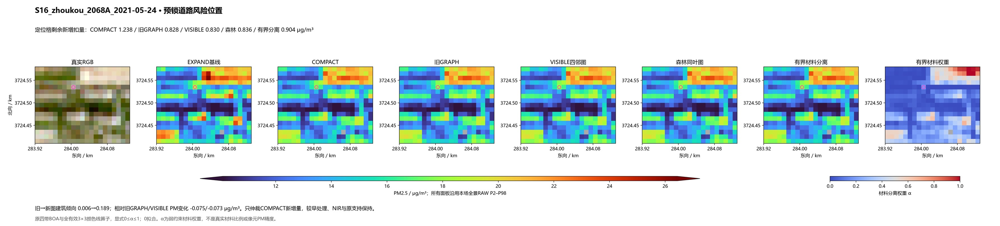
旧GRAPH剩余新增扣量 0.137 → 有界分离 0.114 μg/m³；实际PM变化 +0.023。
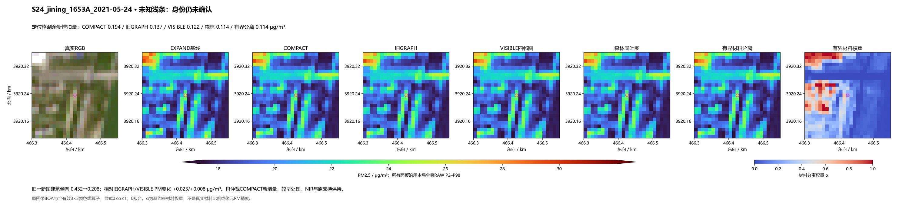
旧GRAPH剩余新增扣量 1.505 → 有界分离 1.317 μg/m³；实际PM变化 +0.188。
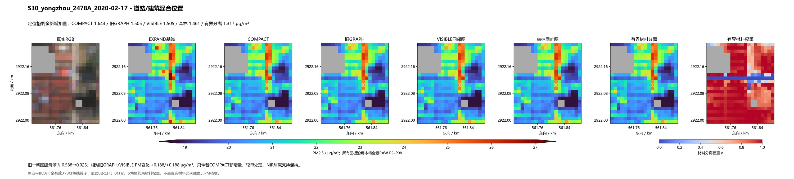
旧GRAPH剩余新增扣量 0.674 → 有界分离 0.680 μg/m³；实际PM变化 -0.006。
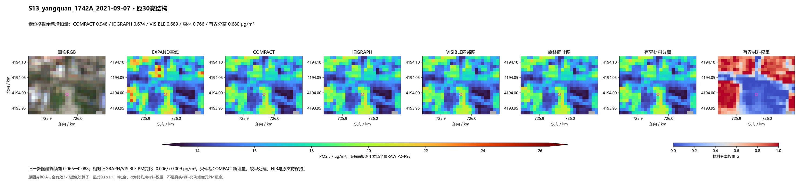
旧GRAPH剩余新增扣量 0.612 → 有界分离 0.609 μg/m³；实际PM变化 +0.003。
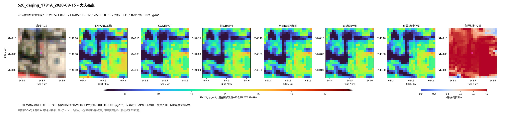
旧GRAPH剩余新增扣量 0.245 → 有界分离 0.289 μg/m³；实际PM变化 -0.044。
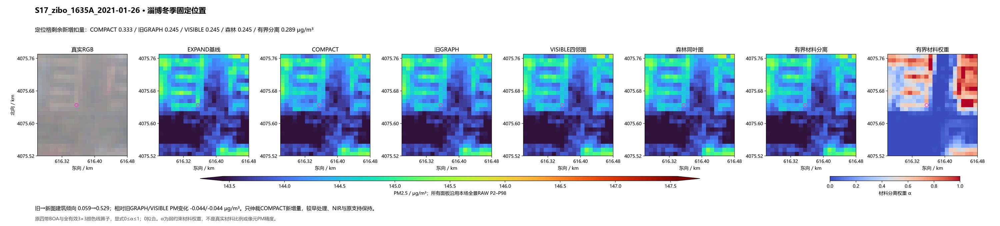
旧GRAPH剩余新增扣量 0.422 → 有界分离 0.428 μg/m³；实际PM变化 -0.007。
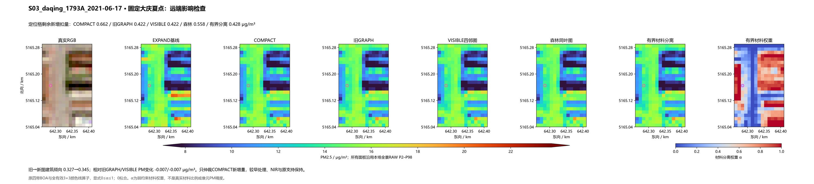
旧GRAPH剩余新增扣量 0.348 → 有界分离 0.340 μg/m³；实际PM变化 +0.008。
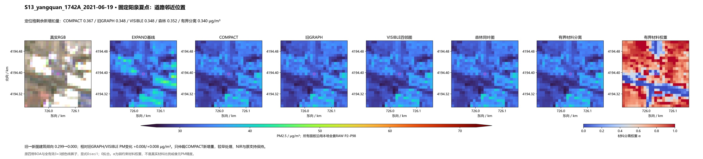
相对VISIBLE PM变化 -0.610730 μg/m³。事后核查，不参与机制/标签。
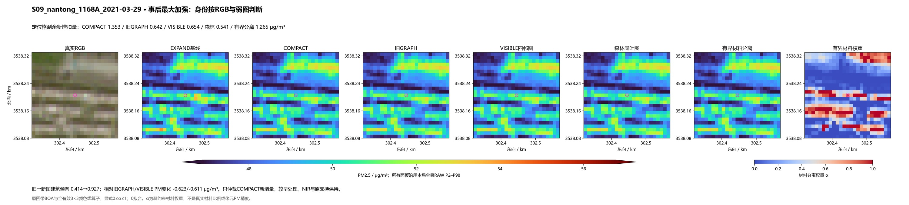
相对VISIBLE PM变化 -0.277897 μg/m³。事后核查，不参与机制/标签。
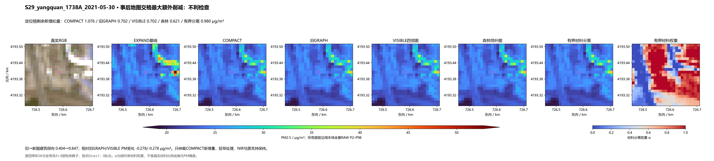
相对VISIBLE PM变化 +0.722595 μg/m³。事后核查，不参与机制/标签。
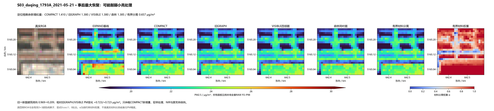
相对VISIBLE PM变化 -0.374776 μg/m³。事后核查，不参与机制/标签。
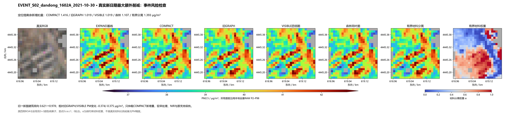
相对VISIBLE PM变化 +0.060378 μg/m³。事后核查，不参与机制/标签。
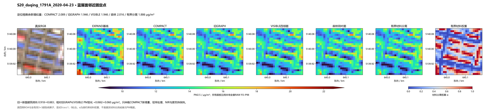
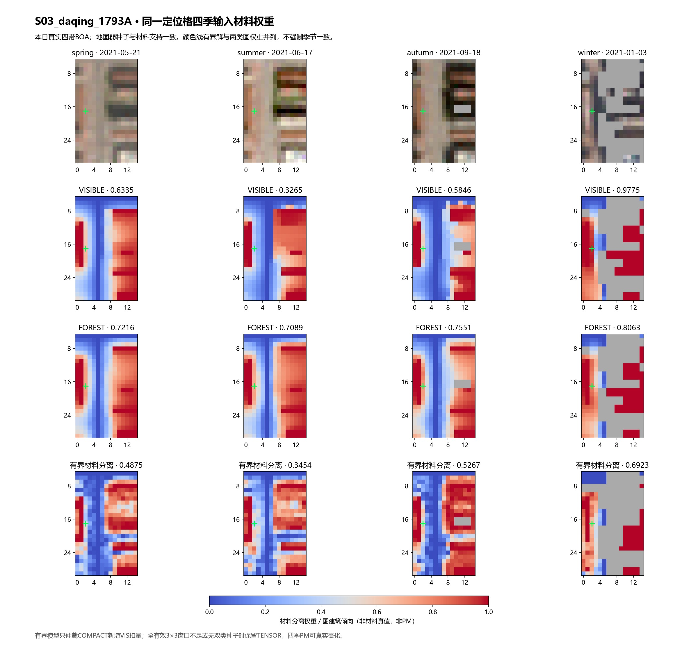
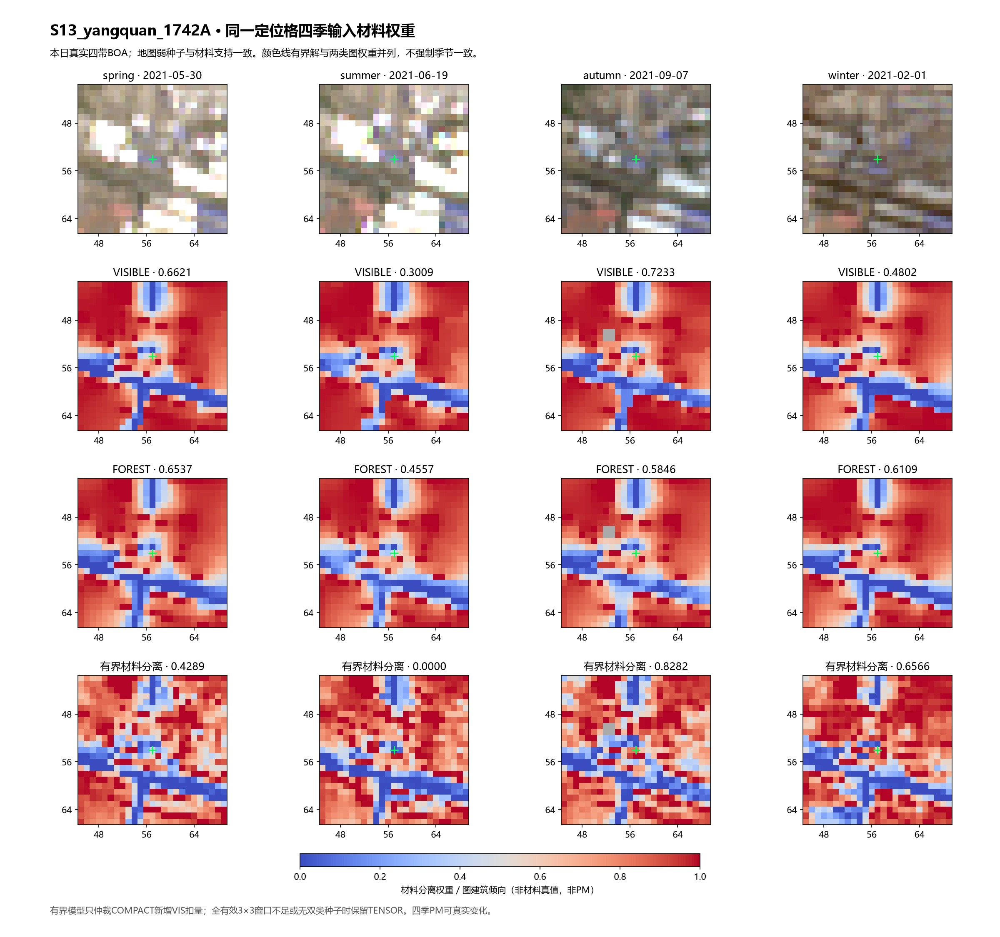
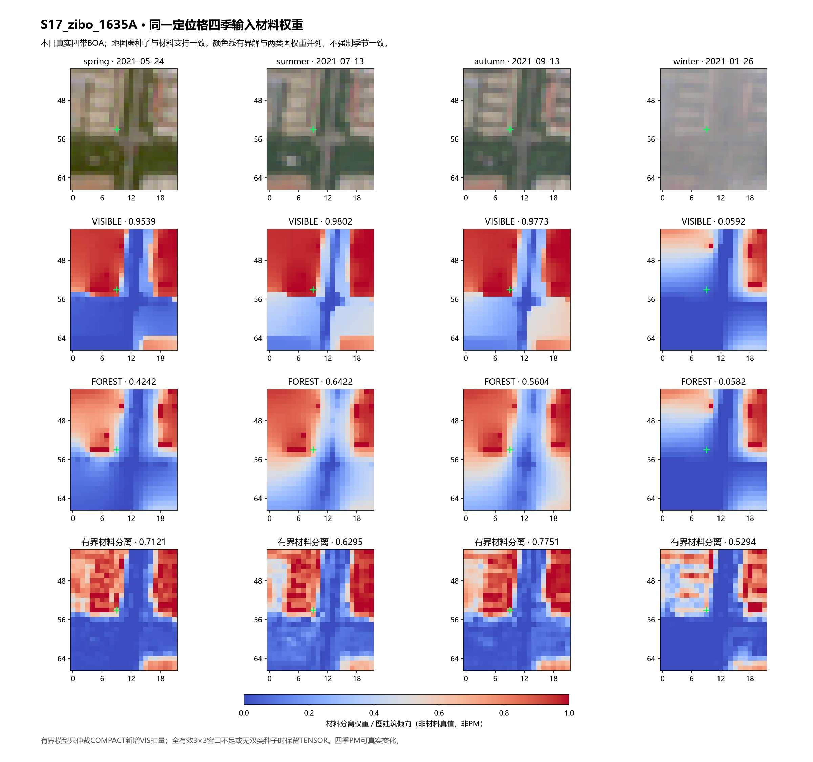